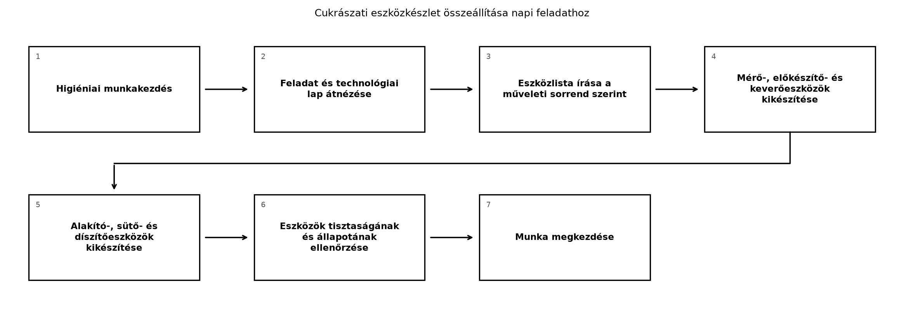

Képzeld el, hogy egy cukrászüzemben reggel hétkor a műszak azzal kezdődik, hogy az előző napról a munkaasztalon maradt egy törött habverő, egy rozsdafoltos tortaforma és egy szakadt nyomózsák. A tanulónak az első feladata: állítsa össze a napi munkához szükséges eszközkészletet. Ha nem tudja, hogy a sima, a csillag és a levélcső mire való, vagy hogy a szilikonformát miért nem szabad késsel vágni, a munka lassú lesz, a termék hibás, és az eszközök tönkremennek. A cukrászati kéziszerszámok, edények és formák ismerete tehát nem felsorolás-magolás: ez a napi munkavégzés sebességének, higiéniájának és gazdaságosságának az alapja.
Gondolj egy teljes kikészítési feladatra: sárga linzer tésztát kell nyújtani, korongokat szaggatni, megsütni, majd lekvárral megkenni, páronként összeragasztani, fondánnal bevonni, és a tetejére fondán-hullámot húzni. Ehhez legalább nyolc-tíz féle eszköz kell: nyújtófa, szaggató, sütőlemez, sütőpapír, sima formázó cső, vékony bevonó cső, csillagcső, kés, hűtőrács, habkártya. A feladat akkor gyors és pontos, ha az eszközöket a műveleti sorrend szerint előre kikészítik (úgynevezett mise en place), és minden eszköz tiszta, száraz, élelmiszerrel érintkezésre alkalmas állapotban van. Az alábbi ábra a gyakorlati eszközkészlet összeállításának folyamatát mutatja.

Definíció. Cukrászati kéziszerszámnak nevezzük azokat a kézzel működtetett, jellemzően kis méretű munkatárgyakat, amelyeket a nyersanyagok előkészítésére, mérésére, keverésére, alakítására, sütésére, hűtésére, díszítésére és tálalására használunk. Ide tartoznak az edények (üst, tál, lábas, habüst) és a formák (tortakarika, sütőforma, szilikonforma, sablon) is, ha nem önálló gépi berendezés részei.
Szabály. A cukrászatban minden eszköznek élelmiszerrel érintkezésre alkalmas anyagból kell készülnie, felületének épnek, tisztíthatónak, szükség szerint fertőtleníthetőnek kell lennie. A használt eszköz nem szennyezheti a terméket, és nem okozhat balesetet. Ezt a követelményt az élelmiszer-higiéniai és élelmiszerrel érintkező anyagokra vonatkozó szabályok alapozzák meg (852/2004/EK, 1935/2004/EK; ellenőrizendő: a hatályos alkalmazás és a gyártói megfelelőségi nyilatkozatok köre).
Higiénia. Munkába állás előtt minden kéziszerszámot és edényt ellenőrizni kell, hogy tiszta-e, száraz-e, nem sérült-e. A repedt, rozsdás, bevonatvesztett, szilánkos eszköz a termékbe kerülő idegen anyag kockázatát jelenti, ezért selejtezni kell, vagy javításig ki kell vonni a forgalomból. Az állandó élelmiszer-maradékot, a penészt, a kellemetlen szagot vagy a leváló felületi bevonatot mindig komolyan kell venni.
A cukrászati munkaeszközöket a munkafolyamat során betöltött szerepük szerint hat csoportba soroljuk. A csoportosítás nem merev: például egy tál lehet előkészítő és keverő edény is, a tortakarika pedig alakító és sütő eszköz is.
| Eszközcsoport | Példák | Jellemző felhasználás |
|---|---|---|
| Mérőeszközök | mérleg, mérőhenger, mérőkancsó, adagolókanál | nyersanyagok tömegének, térfogatának mérése |
| Előkészítő eszközök | kések, hámozók, sziták, darálók, reszelők, magozók | tisztítás, aprítás, osztályozás, szitálás |
| Keverő és melegítő edények | habüst, keverőtál, lábas, üst, kekszes tepsi | keverés, habosítás, melegítés, főzés, dermesztés |
| Alakító és sütő eszközök | nyújtófa, szaggató, derelyevágó, forma, sütőlemez, sütőkeret | tészták formázása, adagolása, sütése |
| Díszítő eszközök | nyomózsák, csőrök, papírtölcsér, habkártya, spatula, ecset | töltés, bevonás, hullámozás, felirat, retusálás |
| Tálaló, csomagoló és kiegészítő eszközök | tálca, tortalapát, csipesz, olló, csomagolóanyag | expediálás, áruvédelem, kényelmi műveletek |
A tabló a táblázat hat csoportját mutatja, összesen 23 számozott eszközzel: mérőkancsó és adagolókanál; konyhakés, hámozó, szita, reszelő; félgömb habüst, habverő, keverőtál, lábas; nyújtófa, szaggatók, derelyevágó, tortakarika, sütőkeret, szilikonforma; nyomózsák, csőrök, habkártya, fémspatula, ecset; tortalapát és csipesz. A HTML-kiadásban csoportonként szűrhető, és rámutatáskor az eszköz neve és a csoport jellemző felhasználása jelenik meg.
A mérés eszközeit külön alfejezet tárgyalja részletesen Mérés a cukrászatban: mérlegek, hőmérők, refraktométer, ezért itt csak annyit mondunk ki: mérésre mérleget, mérőedényt és mérőkanalat használj, ne „szem mértékkel” üvegpoharat. Az otthoni főzőkanál, bögre nem hiteles mérőeszköz, ezért a cukrásztechnológiában csak akkor engedhető meg, ha a receptúra grammban is megadja az adott térfogat tömegét.
Az előkészítő eszközök közül a legfontosabbak a kések. A cukrászatban általában konyhakés, azaz univerzális vágóeszköz; ennek a pengéje sima, hegyes, és kizárólag élelmiszer-előkészítésre használjuk. A pengét papír, doboz, csomagolófólia vágására használni tilos, mert hamar életlenné válik, és a papírrostok szennyezhetik. A hosszú, rugalmas pengéjű tortakés a kész torta felszelésére való. A pengét minden munkafázis után tisztítani kell, különösen zsiradékos, fehérjés, nyersanyagok között.
A szita, a reszelő és a daráló anyagát és a felület bevonatát az adott élelmiszerhez kell választani. Lisztet, porcukrot, kakaóport száraz eszközzel szitálunk; savas gyümölcsöt, például citromot, nem szabad eloxálatlan alumíniumtálban, illetve ilyen bevonatú reszelőn tárolni vagy reszelni, mert a sav oldhatja a fémet (ellenőrizendő: a gyártó anyag- és bevonatleírása). Külön reszelőt vagy tisztán mosott felületet használj a citrushéj reszeléséhez, hogy a viasz és a növényvédőszer-maradék ne keveredjen bele; biotermék vagy jelölten ehető héj esetén is mosás, kefélés szükséges.
A keverőedények közül a legáltalánosabb a félgömb alakú habüst, amelyet habverővel együtt használunk tojáshab, tejszínhab, vajkrém habosítására. A habüst fala sima, ívelt, így a habverő a tál falát egyenletesen éri, és kevesebb anyag marad az edény sarkában. A lábas és az üst a krémfőzés, a karamellkészítés, a felfőzés eszköze; az üst általában nagyobb, két füllel rendelkező, tűzhelyre helyezhető edény. Krém- és cukorfőzéshez vastag, rétegelt aljú, jó hőelosztású edényt válasszunk; a vékony aljú edényben a hő pontszerűen éri a masszát, ezért a cukor és a krém könnyebben leég, ha nem keverik folyamatosan.
A spatulák a keverés, a masszák edényből való kivételének és a felületek simításának eszközei. A hajlékony, vékony pengéjű spakli (szilikonspatula) anyaga hőálló, így közvetlenül lábosban, üstben is keverhetünk vele, amíg a hőmérséklet a gyártó által megengedett határon belül van (ellenőrizendő: gyártói adatlap). A műanyag kaparó vagy vakaró a tálból, asztallapról a masszát, tésztát húzza össze; egységes, repedésmentes lapja könnyen tisztítható. A kaparó segítségével tisztíthatjuk a sütőlemezt is, de sérült kaparóval nem szabad, mert a lemez sérülhet, és a letört műanyagdarab a termékbe kerülhet.
Példa. Egy 20 literes felvert tésztakészítésnél a massza a habüstben készül, majd a tölcsérből a tortaformába kerül. A massza minden g-ja számít, ezért szilikonspatulával az üstöt végighúzzuk, hogy a massza legalább 98–99 %-át kinyerjük. Ha ez elmarad, a tömegveszteség két nap alatt jelentős anyagköltséget okoz.
A nyújtófa, a szaggató és a tortakarika a leggyakoribb alakítóeszköz. A nyújtófa lehet fa, műanyag vagy nemesacél; hűtött tésztákhoz, vajas hajtogatáshoz a nehéz, hideg márvány- vagy nemesacél-nyújtófa használata előnyös, mert kevésbé melegíti fel a tésztát. A szaggatók lehetnek kerek, virág, ovális, négyszögletes alakúak; a szaggatás előtt a szaggató élét mindig lisztezzük vagy olajozzuk, hogy a tészta ne ragadjon. A szaggatót egyenesen, határozottan lefelé nyomjuk, és csavarás nélkül emeljük fel, hogy a tésztaszél ne záródjon össze (leveles tésztánál ez gátolná a rétegek emelkedését), és a tészta sütés közben jól emelkedjen.
A tortakarika és a sütőkeret a tészták sütésének, rétegezésének, dermesztésének formája. A hagyományos fém tortakarika fala állítható magasságú, alj nélküli; a keret sütőpapírra helyezve süthető. A szilikon formák a flexibilis, hőálló formák, amelyekből a kész terméket hajlítással, nyomással ki lehet emelni. A szilikon formát tilos éles késsel vágni, mert a felület megsérül, elszakad, és a sérült formába lerakódott massza már nem távolítható el tökéletesen. A fém formák előkészítése általában vajazás-lisztezés vagy sütőpapírral bélelés; a pontos eljárást a gyártói leírás és a receptúra adja.
A díszítés egyik központi eszköze a nyomózsák. A nyomózsákba helyezhető, különböző kialakítású fém- vagy műanyag szűkítők a nyomócsőrök. A zsák és a csőr együttesen teszi lehetővé a krémek, habok, töltelékek adagolt, formázott kijuttatását. A nyomózsák lehet egyszer használatos, például papír- vagy műanyagzsák, illetve többször használható, például bevonatos textil, műanyag vagy szilikon. Az egyszer használatos zsákot a munka végén eldobjuk; a többször használatost szét kell szerelni, forró mosogatószeres vízben mosni, majd alaposan megszárítani, mielőtt visszakerülne a fiókba.
Allergének. A nyomózsákok és csőrök felületén a zsiradékos, tejes, tojásos, olajos magvas masszák maradéka megköti az allergéneket. A közös mosogatás nem oldja fel a keresztszennyeződés kockázatát. Ha ugyanazt a zsákot gluténmentes és hagyományos lisztes tésztához, illetve diós és diómentes krémhez használják, a mosogatás előtti látható maradékot mindig mechanikusan el kell távolítani, a zsákot zsíroldó mosószerrel kell tisztítani, és külön szárítani. Az allergénmentes termékhez biztosított külön, színkóddal ellátott eszköz a legbiztonságosabb megoldás (ellenőrizendő: az üzem HACCP-terve és allergénkezelési utasítása).
A csőrök fajtái:
| Csőr neve | Kialakítás | Jellemző felhasználás |
|---|---|---|
| Sima, kerek | kerek végű, egyenes | vonalazás, töltés, formázás, pöttyök |
| Csillag | fogazott, csillag alakú nyílás | kagyló, rózsaalapok, csillagminták, krémszegélyek |
| Levél | V alakú, keskenyedő | valódi vagy stilizált levélnyomatok |
| Rózsa | ívelt, széles, szirmokat formázó | rózsaminta nyomása |
| Szultán | sokfogú, finom csillag | finom csillagmintás szegélyek, krémminták |
Az ábra felső sorában a csőrök nyílása látszik felülnézetben (kör; csillag; V alakú bevágás; ívelt, ék alakú rés; sok finom fog), a középső sorban a nyomott minta (pötty és vonal; rozetta, kagyló; levél; rózsaszirom; finom rozetta). Az alsó sor a nyomás menetét mutatja: a csőr 90°-ban áll, a nyomásra a krém kiterül, a nyomás megszüntetése után a csőrt egyenesen emeljük fel; a negyedik kép a lenti 1. tipikus hibát, az oldalt kifolyó krémet ábrázolja.
A csőr mindig a zsák belsejéből, a kivágott nyíláson keresztül illeszkedik, és a zsák szorosan tartja. A csőr cseréjéhez a töltelék nyomását meg kell szüntetni, a zsákot hátulról megcsavarni, a masszát előre tolni.
A képsor lépései: (1) a zsák csúcsát a csőr méretéhez vágjuk; (2) a csőrt belülről a nyílásba toljuk; (3) a zsák felső harmadát visszahajtjuk, és a zsákot magas pohárba állítjuk; (4) spatulával legfeljebb kétharmadig töltjük; (5) a masszát előretoljuk, a zsák végét megcsavarjuk; (6) az erős kéz a csavarásnál nyom, a másik kéz ujjai a csőr fölött vezetik. Pöttyhöz a csőr 90°-ban, vonalhoz és kagylóhoz kb. 45°-ban áll.
A papírtölcsér (cornet) sütőpapírból hajtogatott, eldobható adagolótölcsér. Előnye, hogy nincs mosogatás, és finom, hajszálvékony vonalak készíthetők vele. A tölcsért szorosan, hegyesen hajtogatjuk, a végét ferdén levágjuk. A tölcsért csokoládéíráshoz, feliratokhoz, finom díszítéshez használjuk. A levágott nyílás méretét és a massza hőmérsékletét mindig a feladathoz igazítjuk; túl meleg csokoládé vagy túl nagy nyílás esetén a vonal elterül.
A hajtogatás lépései: a sütőpapír-téglalapot átlósan háromszögekre vágjuk; a derékszögű csúcs felfelé néz, a hosszú oldal közepe lesz a hegy; az egyik sarkot a hegyhez tekerjük, a másikat körbetekerjük úgy, hogy a hegy zárt maradjon; a kilógó csúcsot befelé hajtjuk; félig töltjük, a felső részt lehajtjuk, és a hegyet csak használat előtt vágjuk le ferdén.
A habkártya a bevonó fondán, krém, zselé, dekor simításának lapos, hajlékony eszköze. A kártya mozgatásával a torta oldalát és tetejét sima felületté alakítjuk, miközben a felesleges masszát eltávolítjuk. A fémspatula a masszák emelésére, rétegezésére alkalmas.
Szabály. Az eszközöket mindig a feladatnak megfelelően kell tisztítani. A nyers, erjedő, tejes, tojásos masszák után azonnali öblítés, majd forró mosogatószeres mosás szükséges. A szárításra fordított kellő idő nem luxus: a nedvesen elrakott habverő, csőr, zsák, forma penészedést és kellemetlen szagot okoz. A mosogatás után az eszközt úgy kell tárolni, hogy a víz lecsepegjen, a felület száradjon, és a tároló ne szennyezze vissza.
Figyelem. A forró cukorral, karamellel dolgozó eszközök felülete forró. Az üst, a kanál, a keverő spatula elvételekor hosszú nyelű, hőálló fogóval, kesztyűvel kell dolgozni. A felforrósodott műanyag nyelű eszköz megolvadhat, ha a gyártó által megengedett hőmérsékletet meghaladjuk; ilyen eszközt forró cukorba, forró zsiradékba nem teszünk.
Tilos. A törött, repedt, szilánkos, rozsdás, penészes, szagú, bevonatvesztett eszköz használata a termékhez. A hibát a munkavégzés előtt jelenteni kell, a termelésből ki kell vonni, és a javításig vagy selejtezésig nem szabad használni. A leszakadt szilikon darab, a letört műanyag kaparó, a lepattant zománcdarab a termékbe kerülhet.
A feladat eszközkészletét a technológiai lap alapján állítjuk össze. Első lépésként a műveleti sorrendet nézzük át, és az egyes műveletekhez hozzárendeljük az eszközöket. A készletet a munkaterületen a használat sorrendjében, kézközelben helyezzük el.
Példa. Vajasleveles tészta készítéséhez szükséges jellemző eszközkészlet: - liszt, víz, só, vaj méréséhez: mérleg, mérőedény, mérőkanál; - tésztakészítéshez: keverőtál, dagasztókar, spatula; - tészta hűtéséhez: fólia, műanyag lap, hűtőlemez; - nyújtáshoz, hajtogatáshoz: nyújtófa, vakaró, lisztes ládika, ecset; - alakításhoz: szaggató, derelyevágó, éles kés; - sütéshez: sütőlemez, sütőpapír, kenőecset, rács; - díszítéshez, tálaláshoz: tortalapát, tálca, csomagolóanyag.
Gyakorlati tanács. A kéziszerszámok esetében érdemes bevezetni az ún. kétes állapotú eszköz szabályát: ami nem tökéletesen tiszta vagy nem teljesen ép, az nem kerülhet az ételkészítési munkaterületre.
Cél: a tanuló önállóan, a technológiai lap alapján válassza ki és ellenőrizze a napi feladat eszközkészletét.
Eszközök és anyagok: feladatspecifikus kézi eszközök, edények, formák, mérőeszközök; tisztítószerek, szivacs, kefe, szárítórács; ellenőrző lista.
Higiéniai munkakezdés. Tiszta munkaruha, hajháló, ékszer le, rövid köröm, kézmosás. Az eszközökhöz tiszta kézzel nyúlj.
Lépések: 1. Olvasd el a technológiai lapot, és írd ki a műveleti sorrendet. 2. Állíts össze eszközlistát a műveleti sorrend szerint. 3. Válaszd ki az eszközöket a tárolóhelyről. 4. Ellenőrizd a mérőeszközök tisztaságát, a mérleg nulla állását, a mérőedények jelölését. 5. Ellenőrizd a kéziszerszámok, edények, formák felületét: legyenek tiszták, szárazak, épek, nem szilánkosak. 6. Különítsd el a sérült, kifogásolt eszközt, és jelentsd a felettesnek. 7. A kiválasztott eszközöket rendezd a munkaterületre a használat sorrendjében. 8. A munka végeztével mosogass, száríts, és a tárolóhelyre tegyél vissza mindent.
Ellenőrzési pontok. A kiválasztott eszközök száma és fajtája megfelel a feladatnak; minden eszköz láthatóan tiszta és száraz; a nyomózsák és csőr nincs repedve, a csőr rögzítése szoros; a kaparó éle ép; a mérőeszköz jele jól olvasható.
Tipikus hibák. Az eszközök nem állnak rendelkezésre, mert nem nézték meg előre; a nyomózsák sérült, de használják; a mérleg nem tiszta.
A helyesen kiválasztott és karbantartott eszközkészlet: - minden darabja tiszta, száraz, ép; - a mérőeszköz pontosan mér, a mérleg nulla állása ellenőrzött; - a kések élesek, a nyújtófa sima, a szaggatók éle egyenletes; - a nyomózsák és a csőr szorosan illeszkedik, nem ereszt oldalt; - a formák zsírozottak, lisztezettek, béleltek a receptúra szerint; - a tárolóhelyen az eszközök anyaguk szerint, szárazon vannak elhelyezve.
Hiba 1: A kikészített krém oldalt kifolyik a nyomózsákból, a minta nem tiszta. - Tünet: a massza a zsák nyílásán kívül, a csőr mellett is jön. - Ok: rossz méretű vagy repedt csőr, a zsákba túl sok masszát töltöttek, a zsákot nem csavarták meg, a csőr nincs a zsák nyílásához rögzítve. - Megelőzés: a csőr méretét és típusát a feladathoz válasszuk, a zsákot legfeljebb kétharmadáig töltsük, a zsák végét szorosan csavarjuk, és a csőrt a zsákból kihúzott résszel stabilizáljuk.
Hiba 2: A sütemény a formából nem jön ki egyben, a szilikonforma felülete szakad. - Tünet: a forma belső felületén repedés, szakadás látszik, a massza beleszorul. - Ok: éles késsel vágták ki a terméket, a formát hűtés nélkül erőltették, a hőmérséklet meghaladta a gyártói értéket. - Megelőzés: használjunk megfelelő kioldóeszközt, tartsuk be a forma hőmérséklet-tartományát, sérült formát ne használjunk.
Hiba 3: A habverő, habüst szagos, a tejszínhab gyorsan összeesik, keserű mellékíze van. - Tünet: nem megfelelő, állott szag, gyenge hab. - Ok: a mosogatás utáni szárítás elmaradt, a fehérjemaradék beposhadt, a habüstben zsiradékmaradvány van, a habüstöt más célra használták. - Megelőzés: a habüstöt mindig zsíroldó mosogatószerrel, forró vízben mossuk, vízkőmentesítsük, alaposan szárítsuk, és lehetőleg csak tojáshabhoz, tejszínhabhoz használjuk.
Egy tanuló az esküvői torta készítése előtt nem vette észre, hogy a fém tortakarika belső fala karcos, és a pereme letapadt, odaégett zsírmaradványt tartalmaz. A felvert tészta megsült, de a karikához ragadt, a felület szakadt, és a tészta belsejében apró fémcsíkok jelentek meg a karcos felületről. A terméket nem lehetett értékesíteni. A hibafeltárás során kiderült, hogy a formát előző nap vajas tésztához használták, csak öblítették, és a szárítás után a nedves felületen a zsír megtapadt. Az eset tanulsága: az eszközök mosogatása és ellenőrzése nem a műszak végének „utolsó perce”, hanem a következő műszak első minőségbiztosítási lépése.
Megoldások – Önellenőrzés – válaszok
1. feladat (A). Sorold fel a cukrászati kéziszerszámok hat csoportját, és mindegyikre írj egy példát.
2. feladat (A). Nevezd meg a csillagcső, a levélcső, a szultáncső és a rózsacső közül kettőnek a jellemző felhasználását.
3. feladat (B). Egy napon három feladatot kell elvégezni: 40 db sárga linzer korongot szaggatni, 10 db tortalapot felhasználni, és 120 db süteményt habzsákból díszíteni. Mely eszközöket választod az egyes feladatokhoz? Írj hozzájuk legalább 4 eszközt.
4. feladat (B). Az alábbi eszközökből kettő sérült: repedt szilikonforma, rozsdafoltos fém tortakarika, tiszta habüst, tiszta nyomózsák, elszíneződött de ép kaparó. Melyiket használhatod, és melyiket vond ki a termelésből? Indokold.
5. feladat (C). Tégy fel hibakeresési esetet! A kikészített vajkrém a nyomózsákból nem adja ki a csillagmintát, hanem oldalt folyik. Melyik öt okot ellenőrzöd, milyen sorrendben? Írd le a javítást.
6. feladat (D). Gyakorlati feladat: válassz ki egy egyszerű linzer tésztát, készítsd el a technológiai lap alapján, és közben tölts ki egy eszközkészlet-ellenőrző lista. Az elkészült terméket értékeld: forma, szín, íz, felület, tömeg. A gyakorlatot felügyelettel, tanműhelyben végezd.
1. feladat megoldása. Mérőeszközök: mérleg. Előkészítő eszközök: kés. Keverő és melegítő edények: habüst. Alakító és sütő eszközök: nyújtófa. Díszítő eszközök: nyomózsák csőrrel. Tálaló, csomagoló és kiegészítő eszközök: tortalapát.
2. feladat megoldása. Csillagcső: kagyló, szegély, krémszegély. Levélcső: levélforma nyomása. Szultáncső: finom, sokfogú csillagminta. Rózsacső: rózsaminta.
3. feladat megoldása. 40 db linzer koronghoz: mérleg, keverőtál, nyújtófa, szaggató, sütőlemez, sütőpapír. 10 db tortalaphoz: mérleg, habüst, habverő, spatula, tortakarika, sütőlemez. 120 db sütemény díszítéséhez: nyomózsák, csillagcső vagy sima csőr, habkártya, tálca.
4. feladat megoldása. Használható: tiszta habüst, tiszta nyomózsák, elszíneződött de ép kaparó (amennyiben a felület élelmiszerrel érintkezésre alkalmas, és a gyártói anyagmegfelelőség nem sérült; ellenőrizendő). Kivonandó: repedt szilikonforma, rozsdafoltos fém tortakarika, mert sérült, idegen anyag kerülhet a termékbe, illetve a forma anyaga veszélyes lehet.
5. feladat megoldása. Ellenőrzési sorrend: (1) a zsák megfelelően van-e megtömve, legfeljebb kétharmadig; (2) a zsák végét csavarják-e; (3) a csőr mérete és típusa megfelelő-e; (4) a csőr a zsák nyílásához szorosan illeszkedik-e; (5) a zsák és a csőr repedt-e. A javítás: a massza mennyiségét csökkenteni, a zsákot szorosabban csavarni, a csőrt cserélni, a repedt zsákot selejtezni.
6. feladat megoldása. A gyakorlati értékelés szempontjai: a tésztakorongok formája egyenletes, a szaggatás éle tiszta, a felület nem repedt; színe egyenletes sárga; íze édes, vajas; állománya omlós; tömege a receptúra szerinti; a felhasznált eszközök minden darabja tiszta és ép; az eszközkészlet ellenőrző lista ki van töltve.
A cukrászati kéziszerszámok, edények és formák a munkafolyamat eszközei. A legfontosabb csoportok: mérő-, előkészítő-, keverő- és melegítő edények, alakító- és sütőeszközök, díszítő- és tálalóeszközök. A munkát mindig a technológiai lap alapján összeállított, tiszta és ép eszközkészlettel kezdjük. A nyomózsák és a csőrök kiválasztásánál a massza állaga és a kívánt minta határozza meg a sima, csillag, levél, rózsa vagy szultán csőrt. A szilikonformát éles eszközzel vágni tilos, a sérült formát selejtezni kell. A tisztításnál a zsíroldó mosogatószer, a forró vizes mosogatás és az alapos szárítás az élelmiszerbiztonság feltétele. A kéziszerszámok és edények mindig csak akkor kerülhetnek vissza a tárolóhelyre, ha tiszta, száraz, ép, élelmiszerrel érintkezésre alkalmas állapotúak. Továbbvitt eredmény. Az eszközcsoportok ismeretét a méréstechnika, az alapműveletek és a díszítés alfejezetei használják tovább: Mérés a cukrászatban: mérlegek, hőmérők, refraktométer, Előkészítő műveletek és cukrásztechnológiai alapfogalmak, illetve Egyszerű díszítés: bevonás, burkolás, beszórás, felrakás, fecskendezés, formázás.